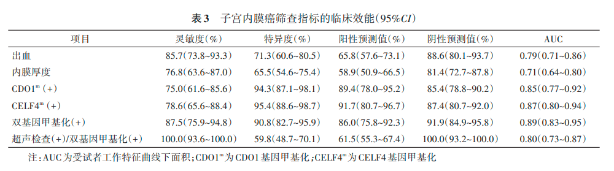

1Background & Objective
- Problem: no non-invasive EC screening recommended; invasive assessment has high miss rates.
- Objective: value of cervical cell CDO1m/CELF4m ± TVS for postmenopausal EC screening.
2Study Design & Cohort
56
EC · 59.3y
87
control · 61.1y
2020.5–21.10
enrollment
- Setting: PUMCH; postmenopausal women, suspected lesions, hysteroscopy-referred.
- Assays: cervical cells → CDO1m/CELF4m (ΔCt ≤8.4 / ≤8.8) + TVS ET + CA125.
- Reference: hysteroscopic histopathology = gold standard.
- Inclusion: ≥40 y postmenopausal; suspected lesion per guideline; consent.
- Cut-offs: TVS positive ET ≥5 mm · CA125 ≥35 U/ml.
87.5%
dual Se (75.9–94.8)
90.8%
dual Sp (82.7–95.9)
100%
TVS+DNA Se
100%
NPV · TVS+DNA
61.5%
PPV · TVS+DNA
86.0%
PPV · dual
P=0.051
age EC vs control
≥40y
inclusion age
- Design note: TVS + DNA maximal sensitivity; dual alone best specificity balance.
- Practice fit: fits opportunistic screening for postmenopausal bleeding workup.
- First exfoliated-cell epigenetics study for EC screening in China — novel approach.
- Why not blood ctDNA: low tumor-cell abundance lacks sensitivity for early EC.
- Cell advantages: fully non-invasive · easy collection · ample cells · histology-concordant.
- Gene choice: CDO1/CELF4 distinguish EC from cervical lesions & subtypes.
Ethics ZS-2740 · cross-sectional design · multivariable logistic + ROC.
3Risk Factors — OR Comparison
- Methylation leads: CELF4m OR 44.01 (6.79–285.25) & CDO1m 17.34 — above CA125/ET.
4Dual-Gene & TVS Combination
87.5%
Se · dual
90.8%
Sp · dual
86.0%
PPV
91.9%
NPV
100%
Se · TVS+DNA
59.8%
Sp · TVS+DNA
100%
NPV · TVS+DNA
- TVS + DNA: sensitivity reaches 100% — no EC missed; specificity drops to 59.8%.
5ROC — Screening Accuracy

Fig. ROC — dual-gene methylation vs TVS & other indicators.
AUC↑
dual best single
100%
TVS+DNA Se
- Accuracy: methylation outperforms other non-invasive indicators in postmenopausal women.
- Balanced default: dual-gene alone (Se 87.5/Sp 90.8) — good specificity for triage.